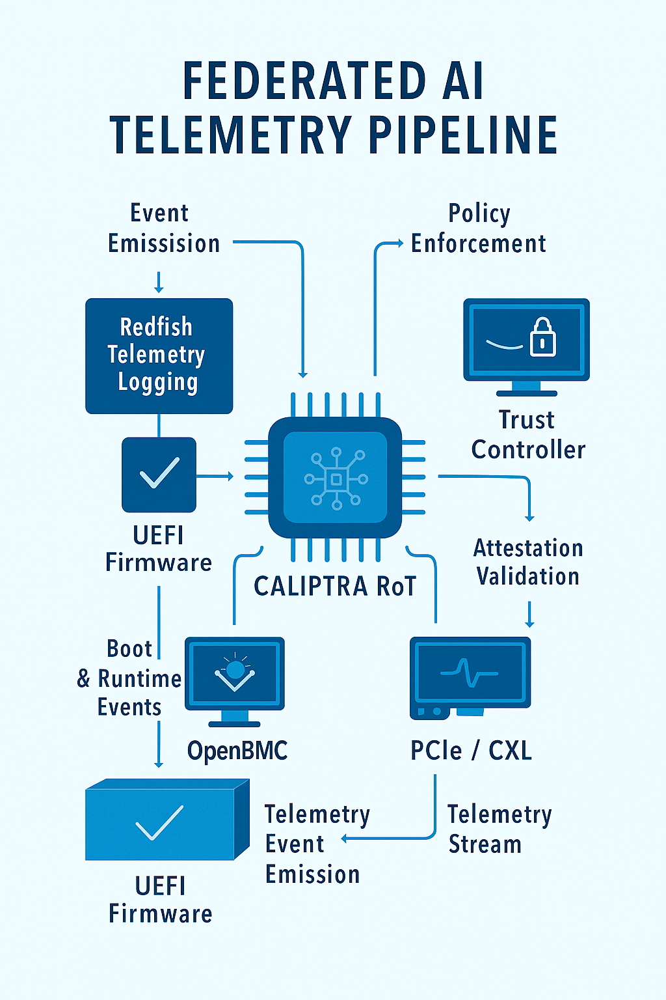
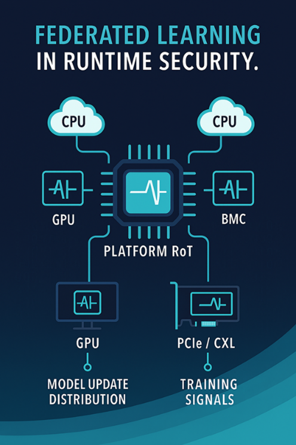

Federated Telemetry Pipeline
TrustForgeAI integrates UEFI, OpenBMC, and Caliptra RoT to enable secure, scalable telemetry for federated AI workloads. The diagram below illustrates how platform events flow through firmware layers, are logged via Redfish schema extensions, and verified by federated trust controllers.

Layered Security Architecture
Our platform security stack spans AI-enhanced runtime assurance, trusted display and connectivity protocols, and hardware-rooted trust. The diagram below illustrates this layered approach:

- AI-Enabled Security: Runtime anomaly detection, model integrity enforcement
- CXL | TDISP: Trusted interconnect and display protocols for secure data flow
- PSA Level 3 | Caliptra RoT: Hardware-based attestation and cryptographic identity binding
Federated Learning for Runtime Security
We apply federated learning principles to platform security by distributing model updates and training signals across CPUs, GPUs, and BMCs. This architecture ensures secure, decentralized learning without exposing raw data.

- Model Update Distribution: Secure propagation of learned parameters across nodes
- Training Signals: PCIe/CXL-based telemetry inputs for continuous learning
- Platform RoT: Central trust anchor validating model integrity and telemetry authenticity
Federated AI Security model mapping to STRIDE
| STRIDE Category | Federated AI Mapping |
|---|---|
| S – Spoofing | Learns identity‑related anomalies from device attestation, boot measurements, and hardware‑rooted identity signals to detect fake devices, impersonation, and unauthorized access attempts. |
| T – Tampering | Models firmware, boot‑path, and configuration integrity patterns to detect unauthorized modifications, supply‑chain code injection, and below‑OS manipulation attempts. |
| R – Repudiation | Uses telemetry anchors and cryptographically validated event streams to learn deviations in auditability, missing logs, forged events, or attempts to erase operational traces. |
| I – Information Disclosure | Learns side‑channel and telemetry leakage patterns, detecting abnormal access to sensitive data, key‑handling anomalies, and unauthorized extraction behavior. |
| D – Denial of Service | Models resource‑usage baselines across CPU, memory, power, and boot flows to detect early‑boot DoS, flooding, starvation, and hardware‑level instability patterns. |
| E – Elevation of Privilege | Learns deviations in privilege transitions, secure‑boot bypass attempts, firmware escalation paths, and hardware‑level privilege abuse that OS‑level tools cannot observe. |